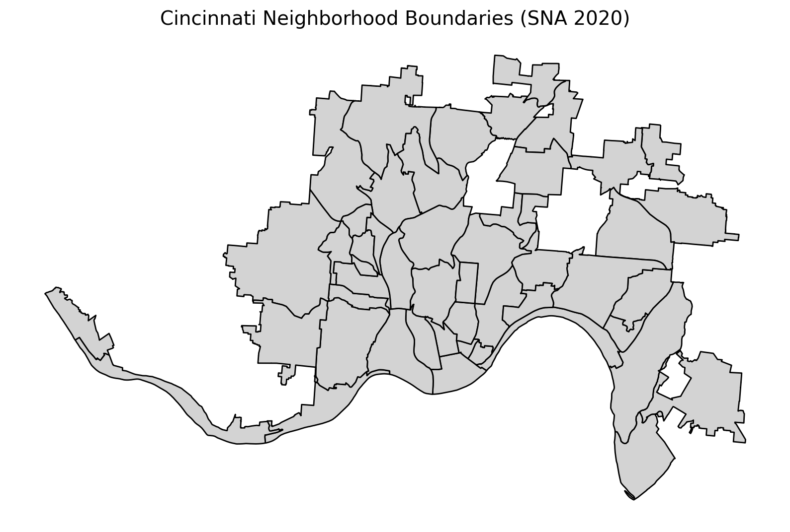

Ohio Urban Renewal Explorer - Technical Report
Analyzing the impacts of Urban Renewal on connectivity and socioeconomic indicators in Cincinnati, Ohio. Showing barriers to revitalization.
Introduction
A lot of dense urban neighborhoods in the United States were decimated by policies of Urban Renewal in the 1950s and 60s. These initiatives often involved constructing expanded roads, interstate highways, and other public works, but caused immense displacement of existing communities.
Prominent examples in cities such as Boston, New York City, and Pittsburgh have been widely studied and critiqued in works like Root Shock by Mindy Thompson-Fullilove and The Death and Life of Great American Cities by Jane Jacobs. In this report, I turn attention to a lesser-known case: the West End of Cincinnati, Ohio, exploring how similar policies impacted its urban fabric and communities.
I focus on three primary data sources: aerial imagery from the Ohio Department of Transportation (ODOT), Sanborn Fire Insurance Maps from the 1920s and 1930s, and historical and contemporary Census records. Using these sources and tools from Python, including OSMnx, I illustrate the loss of street connectivity, analyze socioeconomic trends, and highlight barriers to revitalization in the West End.
Methodology
Census Data & Longitudinal Tract Database
Sources
To analyze the socioeconomic evolution of Cincinnati’s urban core, I utilized data from the Longitudinal Tract Data Base (LTDB) provided by Brown University. Tracking socioeconomic shifts from 1970 to the present poses a significant spatial challenge: Census tract boundaries are redrawn every decade to reflect population changes, making direct longitudinal comparisons difficult.
The LTDB addresses this by standardizing historical Census data from 1970, 1980, 1990, and 2000 into 2010 Census tract boundaries using interpolation and cross-walk weights. This standardization allows for a somewhat consistent comparison of variables like median household income and racial composition across ~45 years of Cincinnati’s history.
For modern context (2021), I supplemented this with American Community Survey (ACS) 5-year estimates retrieved via the Census Bureau API.
Processing
For 2021 5-year ACS estimates, the process was quite straightforward. I created a set of visualizations which can be viewed in the results section below.
For the LTDB, since it does not offer a public API, the data processing workflow required several manual and programmatic steps.
Data Processing: Raw CSV files containing decennial estimates were downloaded and parsed. Using the LTDB codebook, I mapped inconsistent header formats (which vary by release year) to a standardized schema. For instance, household income variables were mapped to common income columns across all dataframes.
Spatial Filtering: To focus the analysis on the study area, I used pygris to retrieve the 2010 TIGER/Line shapefiles for Hamilton County, Ohio. The tabular LTDB data was then filtered to include only tracts corresponding to the county FIPS code (39061).
Spatial Join & Neighborhood Clipping: Using Cincinnati’s Statistical Neighborhood Approximation (SNA) boundaries, I performed a spatial join to identify which tracts fell within my primary focus areas: the West End, Queensgate, and Over-the-Rhine.
Interactive Visualization: The final processed datasets were integrated into an interactive Folium map. To optimize user experience, I utilized a radio-button layer control system. This allows users to toggle between decades while maintaining a consistent geographic reference.
ODOT Historical Aerial Imagery + Historical Data
Sources
ODOT ODOT did aerial surveys of Ohio from the late 1940s to the 2000s. These GeoTIFFs provide very high quality images, allowing you to see buildings, parks, and streets that no longer exist.
Sanborn Historical Sanborn Fire Insurance Maps served as a data source for this project, providing highly detailed overviews of the study area from the early 20th century. These documents were accessed through the Cincinnati Public Library digital collection and the Ohio Web Library,
Processing
ODOT The GeoTIFFs provided by ODOT come with a CRS and coordinate bounding box. Upon bringing them into Python and visualizing on a map, I realized the information is slightly off. This could be because the coordinates were provided by pilots not using modern computer systems. As a result, I had to process and scale one sample aerial image from Cincinnati until it roughly corresponded to current day landmarks. This sample image is presented in the results section, and is representative of the target neighborhoods defined in the census section.
The Folium map was augmented with custom JS which allows you to draw streets and download them in a GeoJSON format.
Sanborn The maps were used to roughly reconstruct the historic street grid. The maps also provided insights on the neighborhood’s fabric by noting uses of certain buildings, such as churches and businesses (factories, gas stations, etc) that existed in the area prior to urban renewal.
I also used QGIS to georeference these images and turn them into GeoTIFFs. These can be used for future automation work in Python.
Street Network Analysis (OSMnx)
One of the resulting products from the ODOT Aerial Image section was a new GeoJSON containing historical streets in Cincinnati. I used this to conduct some street network analysis - showing how much disruption to the grid occurred.
Results
Census Data & Longitudinal Tract Database
For contemporary data analysis, I created a few visualizations of Cincinnati’s census tracts, neighborhood boundaries, and median household income. These are presented below.



For the LTDB data, I created a Folium map.
ODOT Historical Aerial Imagery + Historical Data
Below is the result of processing the ODOT aerial GeoTIFF and placing into a Folium map.
Note the ability to draw and download streets in a GeoJSON format.
Street Network Analysis
Conclusion
The visualizations above highlight several patterns in Cincinnati’s urban core. The West End absorbed catastrophic population loss following Urban Renewal, and its median household incomes have consistently lagged behind the rest of the city — even compared to nearby neighborhoods like Over-the-Rhine and Pendleton. This shows up clearly in both the contemporary census data and the LTDB timeline.
The historical aerial imagery underscores the scale of what was erased. Blocks that once held homes, churches and gathering spaces, and small businesses have been replaced by scattered housing, industrial sites, and warehouses.
Finally, the current street network reveals a level of fragmentation that the rest of the area doesn’t experience. This break in connectivity poses a real challenge for any future effort to transition the area away from heavy industry and back toward the kind of residential and mixed-use fabric that shaped the neighborhood in the past.
Future Steps
The primary challenge encountered during this project was the integration of disparate and non-georeferenced historical data sources. Due to time constraints, the reconstruction and analysis of the pre-urban renewal urban fabric—including drawing historic street grids and referencing structural features from the Sanborn maps and ODOT aerial imagery—were largely performed through manual methods.
Moving forward, the project would benefit significantly from two things.
First, automating historical data extraction: I started experimenting with using Python computer vision tools to automatically pull out street segments and text from the high-resolution Sanborn maps. The early tests were hit-or-miss, but the code is saved for future use. If this approach can be pushed further, it would seriously cut down the manual work and give a cleaner, more accurate comparison between the historic and modern street networks — especially for measuring how much connectivity was lost.
Second, digging deeper into the socioeconomic patterns with clustering: The time-series income data makes it pretty clear that the urban renewal area split off from its neighbors after the 1960s. To actually measure that, a spatial clustering analysis (like k-means or DBSCAN) could group census tracts based on things like median income or housing values. That would give an objective picture of how different areas shifted over time and show whether nearby neighborhoods followed different paths — basically confirming how the footprint of poverty or growth changed across the decades.